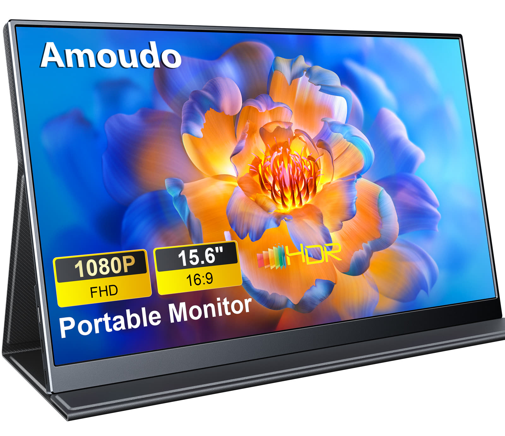
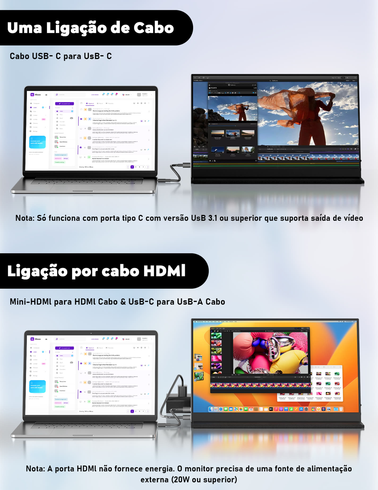
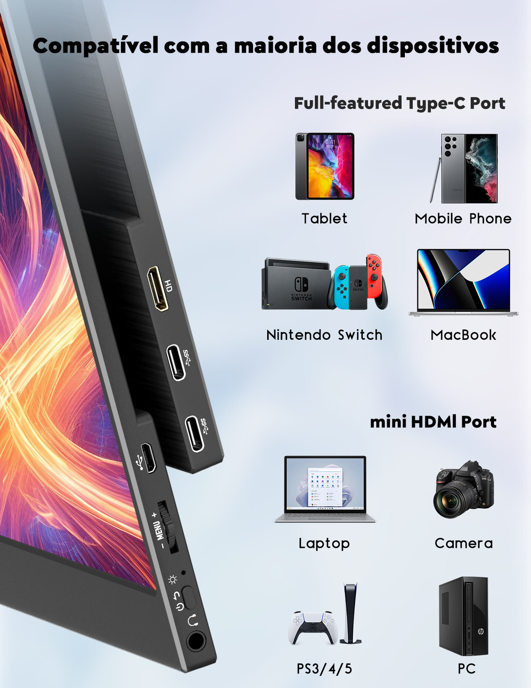
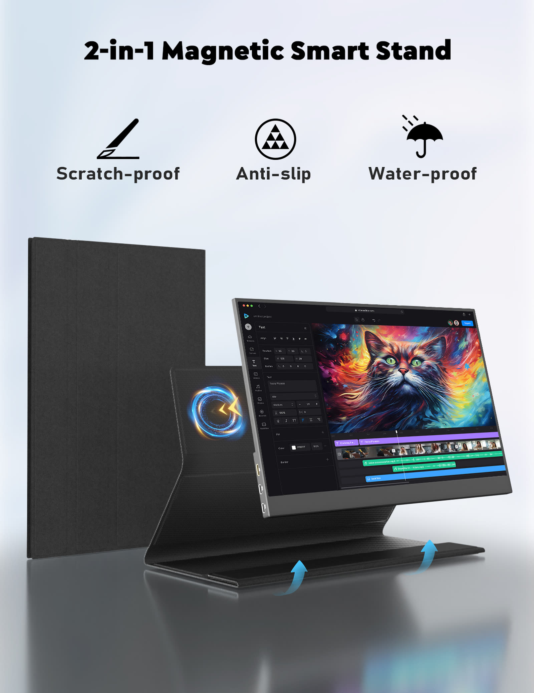
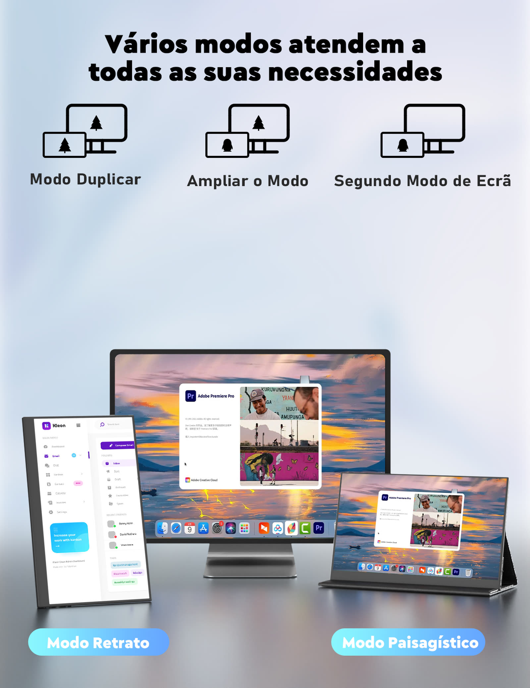
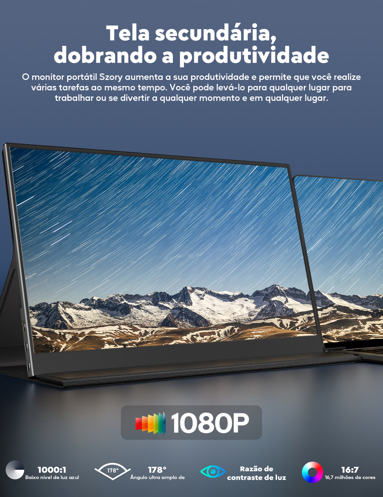

Trabalho
Segunda tela para multitarefa de verdade.
Monitor portátil AMOUDO de 15.6 polegadas, Full HD IPS. Pesa 623 gramas e conecta com um único cabo USB-C.
Você alterna janelas, perde contexto e recomeça do zero. O problema não é o seu trabalho. É o tamanho da sua tela.
A solução não é um monitor maior. É mais tela, onde ela couber.
Tela escura, zero distração. Acesa no primeiro sinal de trabalho, com cores fiéis de ponta a ponta.
15.6 polegadas Full HD IPS com apenas 11 mm de espessura. 623 gramas. Menos que o seu laptop, menos que um caderno.
Painel IPS fosco anti-reflexo, com baixa emissão de luz azul. Dias longos de trabalho sem fadiga.

Segunda tela para multitarefa de verdade.

60 Hz e 6 ms de resposta, sem delay.

623 g que não pesam na mochila.

Material de um lado, suas notas do outro.

Gire a tela para ler, codar e ver feeds.

Mini HDMI para Switch, PS e PCs.
Envio internacional, garantia de 1 ano. Sem drivers, sem complicação.
Monitor portátil AMOUDO 15.6" Full HD IPS. Vendido via AliExpress.